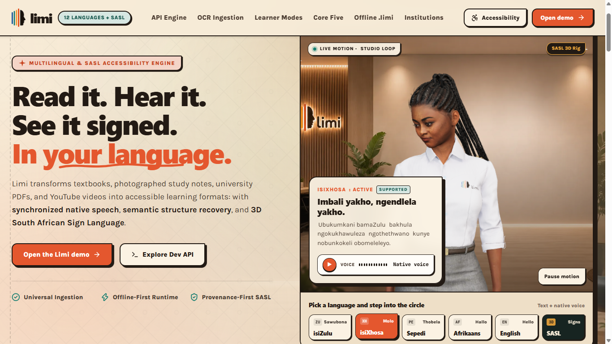

Featured project · 2026
Limi
An accessibility engine that transforms textbooks, study notes, university PDFs and videos into learning formats people can read, hear and see signed.
- Supports 12 South African languages and South African Sign Language.
- Combines OCR ingestion, semantic structure recovery and synchronized native speech.
- Designed with an offline-first learner experience for constrained environments.
🏆 Geekulcha Annual Hackathon 2026 · 1st place
